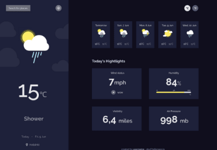
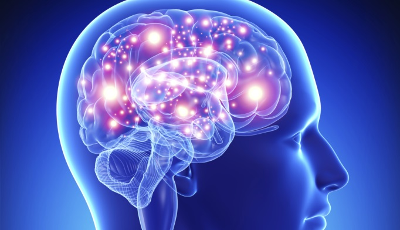

Smart Brain - Face Recognition
Created by Samer Saida, Aug 12, 2021
The Face Recognition (FR) is growing as a major research area because of the broad choice of applications in the fields of commercial and law enforcement. Traditional FR methods based on Visible Spectrum (VS) are facing challenges like object illumination, pose variation, expression changes, and facial disguises. Unfortunately these limitations decrease the performance in object identification and verification. To overcome all these limitations, the Infrared Spectrum (IRS) may be used in human FR. So it leads and encourages the researchers for continuous research in this area of FR. Simultaneously, the present study emphasizes the use of three dimensional cubic dataset i.e. Multi/ Hyperspectral Imagery Data in FR. The IR based Multi/ Hyperspectral Imaging System can minimize the several limitations arise in the existing and classical FR system because the skin spectra derived with cubic dataset depicts the unique features for an individual. Multi/ Hyperspectral Imaging System provides valuable discriminants for individual appearance that cannot be obtained by additional imaging system that's why this may be the future of human FR. This paper also presents a detailed and time to time review of the literature on FR in IRS.
Find Out More
Weather App - Using OpenWeatherApp
Created by Samer Saida, Aug 12, 2021

OpenWeatherMap is an online service, owned by OpenWeather Ltd, that provides global weather data via API, including current weather data, forecasts, nowcasts and historical weather data for any geographical location. The company provides a minute-by-minute hyperlocal precipitation forecast for any location. The convolutional machine learning model is used to utilise meteorological broadcast services and data from airport weather stations, on-ground radar stations, weather satellites, remote sensing satellites, METAR and automated weather stations. The company has more than 2 million customers, ranging from independent developers to Fortune 500 companies.[1] The variety of weather APIs provided by OpenWeatherMap have found a significant popularity among the software developers, which resulted in the growing multitude of repositories on GitHub.[2] The APIs support multiple languages, units of measurement and industry standard data formats like JSON and XML. In 2021, OpenWeatherMap launched a number of initiatives to support students, researchers and developers across the world.
Find Out More
Cortex AnalytiX - Help Start-Up Foundation
Created by Fares Halahleh and Samer Saida, Jun 2021

We’ve always been fascinated by human intelligence – it shaped the modern world we live in today. Intelligence allows us to learn, imagine, cooperate, create, communicate, and so much more. By better understanding different aspects of intelligence, we can use this knowledge as inspiration to build novel computer systems that learn to find solutions to difficult problems on their own.
We’re a team of scientists, engineers, machine learning experts and more, working together to advance the state of the art in AI
From basic brain research to treating human brain disorders The human brain is the most complex entity we know. Disorders of the human brain are embedded in this complexity. Potential advances in treating these disorders result from the growing understanding of this complex organization. The brains of monkeys have some important similarities to the human brain in structure and organization, and monkeys have therefore been extensively studied to help us to understand human brain disorders. With this in mind, the National Academy of Sciences (NAS) convened a colloquium,
Find Out More